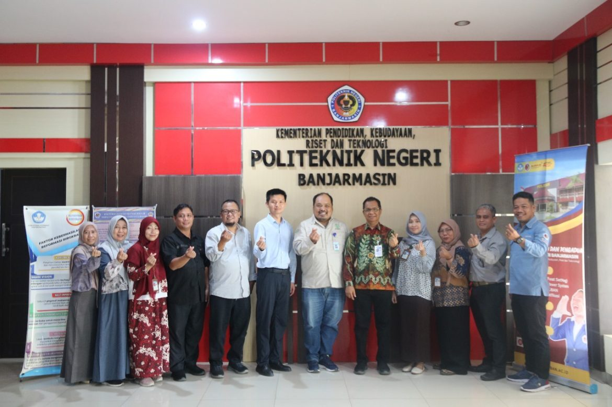
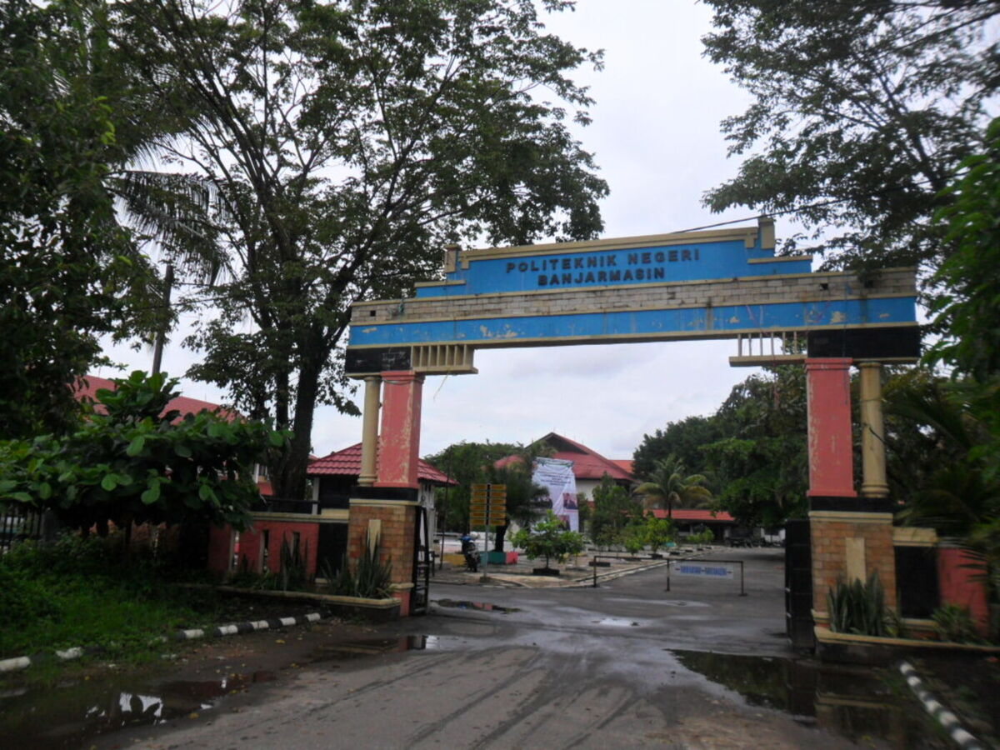

{kind=link}
banner
Spanduk resmi yang dipakai pada seluruh pos berita PKKMB 2026.
- Pemilik
- Politeknik Negeri Banjarmasin
Transparansi
Halaman ini mencatat dari mana setiap informasi berasal. Data program studi terakhir disegarkan 2026-08-14 dari portal SPMB resmi.
Verifikasi
Klaim yang paling sering dikutip beserta sumber tempat kami memverifikasinya.
Rujukan
Seluruh informasi faktual pada situs ini berasal dari kanal berikut. Tanggal periksa menunjukkan kapan halaman terakhir diverifikasi.
Humas Poliban
https://pkkmb.poliban.ac.id/berita/tata-tertib-pkkmb-967Humas Poliban
https://pkkmb.poliban.ac.id/berita/frame-video-dan-instagram-pkkmb-187Politeknik Negeri Banjarmasin
https://poliban.ac.id/poliban-sambut-1-817-mahasiswa-baru-melalui-pkkmb-2026-2027/ANTARA News Kalimantan Selatan
https://kalsel.antaranews.com/berita/529420/poliban-kenalkan-kehidupan-kampus-kepada-1817-mahasiswa-baruDipakai hanya sebagai konfirmasi fakta. Situs melarang pengambilan konten/aset.
Politeknik Negeri Banjarmasin
https://poliban.ac.id/Politeknik Negeri Banjarmasin
https://poliban.ac.id/profil-direksi-poliban/Politeknik Negeri Banjarmasin (siAkad Cloud)
https://pmb.poliban.ac.id/program-studiPoliteknik Negeri Banjarmasin
https://poliban.ac.id/sipil/Politeknik Negeri Banjarmasin
https://poliban.ac.id/upa-perpustakaan-poliban-dorong-pemanfaatan-e-jurnal-cambridge-untuk-penelitian/Politeknik Negeri Banjarmasin
https://poliban.ac.id/wp-json/wp/v2/postsEndpoint JSON publik bawaan WordPress pada situs resmi. Dipakai sebagai sumber berita terkini melalui pembaruan cache manual (npm run refresh:news), bukan pengambilan saat runtime.
Politeknik Negeri Banjarmasin
https://poliban.ac.id/hadiri-upacara-penutupan-pkkmb-2024-ini-pesan-direktur-poliban-untuk-para-maba/Politeknik Negeri Banjarmasin
https://poliban.ac.id/penerimaan2024/Politeknik Negeri Banjarmasin
https://poliban.ac.id/video-profile-poliban-2024/Politeknik Negeri Banjarmasin
https://poliban.ac.id/our-blog/Wikimedia Commons
https://commons.wikimedia.org/wiki/File:Politeknik_Negeri_Banjarmasin.jpgLisensi: Attribution (bebas dipakai dengan atribusi)
Pembuat: Arief Rahman Saan (Ezagren)
Aset visual
Semua berkas disimpan lokal — tidak ada hotlink ke server pihak ketiga. Tidak ada citra hasil pembuatan AI pada situs ini.
Spanduk resmi yang dipakai pada seluruh pos berita PKKMB 2026.
Foto pimpinan yang diterbitkan sendiri oleh situs resmi PKKMB Poliban.
Logo horizontal yang dipakai sebagai kop situs resmi poliban.ac.id. Hanya dipangkas margin kosongnya; proporsi, warna, dan bentuk lambang tidak diubah.
Lambang institusi versi resmi dari laman penerimaan mahasiswa baru. Dipakai apa adanya tanpa digambar ulang.

Dokumentasi kegiatan yang diterbitkan sendiri pada arsip berita resmi Poliban. Memperlihatkan papan nama institusi dan lambang resmi.
Dokumentasi resmi upacara penutupan PKKMB 2024. Dipakai sebagai gambaran suasana PKKMB dan selalu diberi keterangan tahun agar tidak disalahartikan sebagai dokumentasi 2026.

Foto dokumenter kampus berlisensi bebas. Atribusi wajib ditampilkan pada halaman yang memuatnya.
Cara data disegarkan
Situs ini statis. Data resmi diambil melalui perintah eksplisit dan disimpan sebagai cache — tidak ada permintaan jaringan saat halaman dibuka.
22 program studi beserta jenjang, akreditasi, dan tautan resminya diambil dari portal SPMB.
npm run refresh:prodi12 berita terbaru diambil dari WP REST API situs resmi. Hanya judul, tanggal, dan ringkasan yang disimpan; isi artikel tetap di sumbernya.
npm run refresh:news
npm run refresh:check membandingkan cache dengan sumber resmi dan gagal bila keduanya berbeda, sehingga data usang dapat terdeteksi lebih awal. Bila jaringan tidak tersedia, cache lama tetap dipakai dan build tetap berhasil.
Keterbukaan
Informasi berikut sengaja tidak ditampilkan sebagai fakta. Kami memilih menghilangkannya daripada menampilkan angka yang tidak dapat dipertanggungjawabkan.
Angka ini muncul pada salinan situs lama, namun tidak ditemukan pada sumber resmi mana pun. Dihapus dari halaman statistik.
Sumber sekunder menyebut peringkat berbeda-beda dan tidak ada pengumuman resmi yang dapat dirujuk. Tidak ditampilkan.
Rundown resmi hanya tersedia sebagai lampiran PDF. Halaman jadwal menampilkan struktur harian dan menautkan dokumen aslinya.
Belum dipublikasikan pada kanal resmi mana pun.
Portal SPMB mengosongkan kolom akreditasi untuk kode 21318. Halaman prodi menampilkan keterangan “belum tercantum pada sumber resmi”, bukan menebak nilai.
Situs resmi baru menerbitkan satu foto kegiatan 2026 dan berkas aslinya tidak dapat diambil secara terprogram. Suasana PKKMB diwakili dokumentasi resmi tahun 2024 yang selalu diberi keterangan tahun.
Setiap jurusan menerbitkan visi–misinya sendiri, tetapi tidak ditemukan laman visi–misi institusi pada domain resmi.
Bila terdapat data yang keliru atau sudah berubah, panitia PKKMB dan Humas Poliban dapat
menyampaikan koreksi melalui halaman kontak. Data program studi juga dapat disegarkan
otomatis dari portal SPMB dengan menjalankan npm run refresh:prodi.
{kind=link}
{kind=link}
{kind=link}
{kind=link}
{kind=link}
{kind=link}